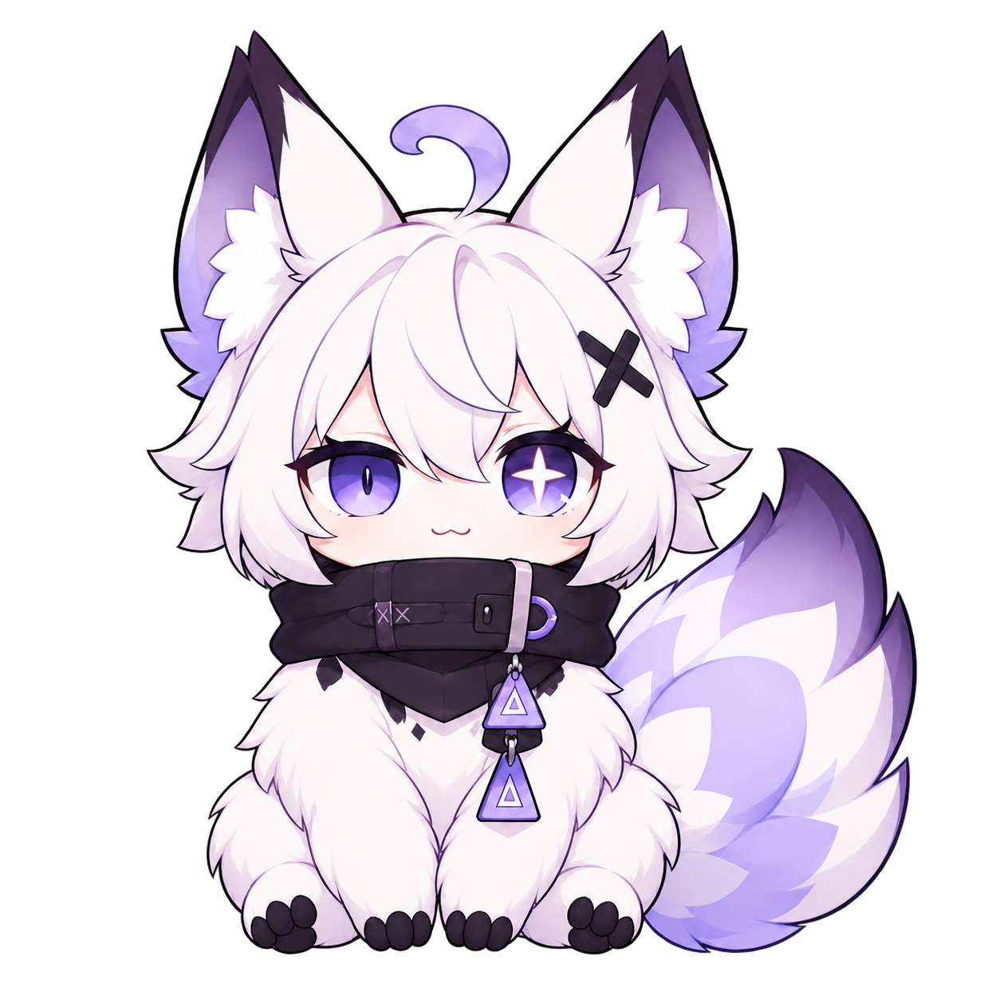
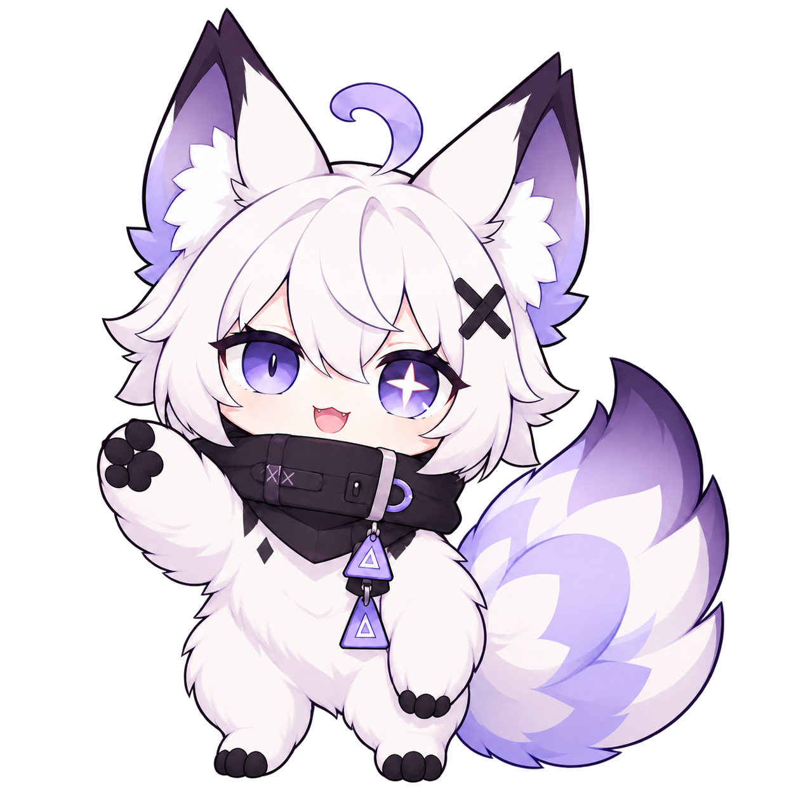
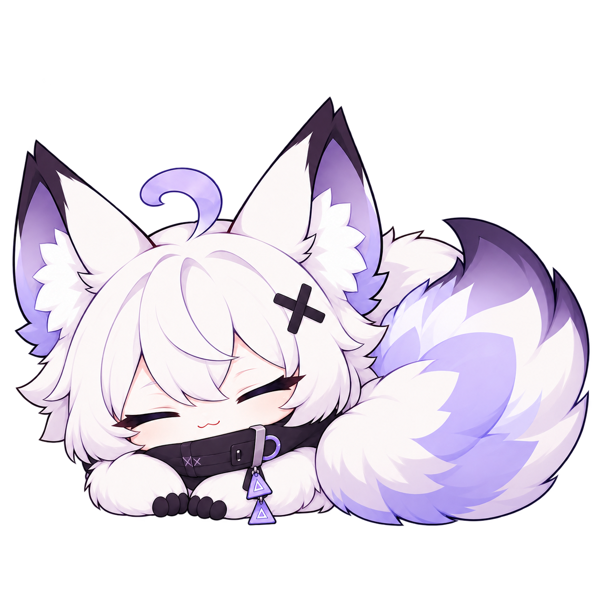
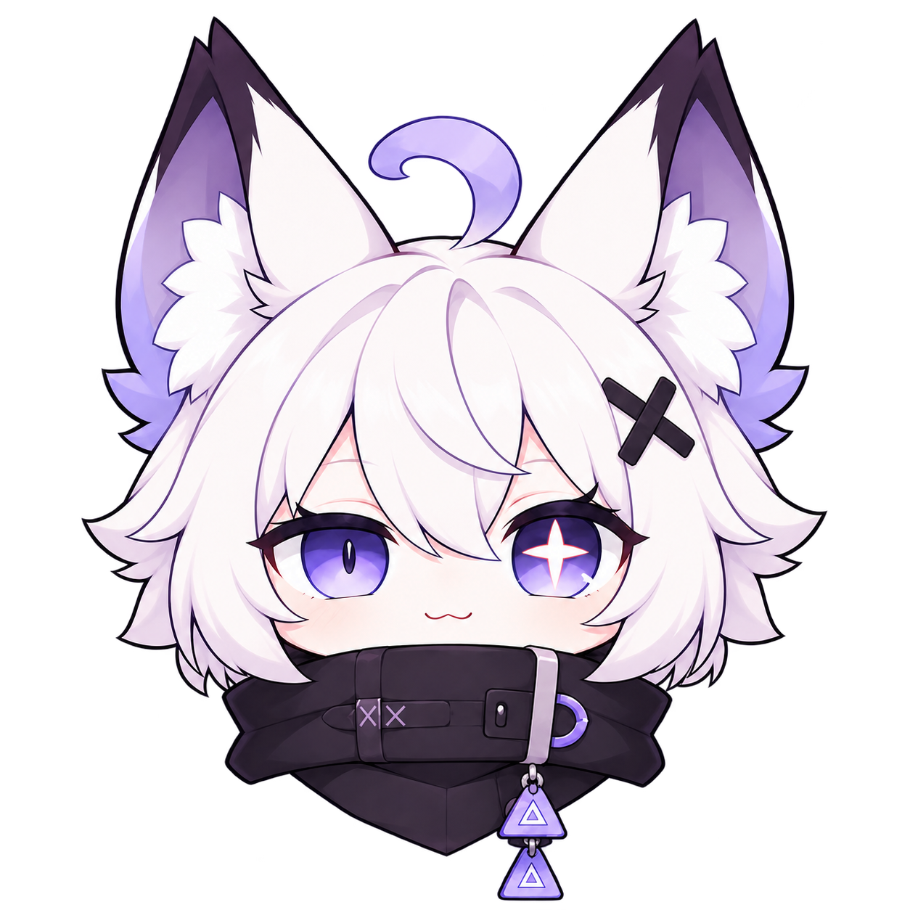
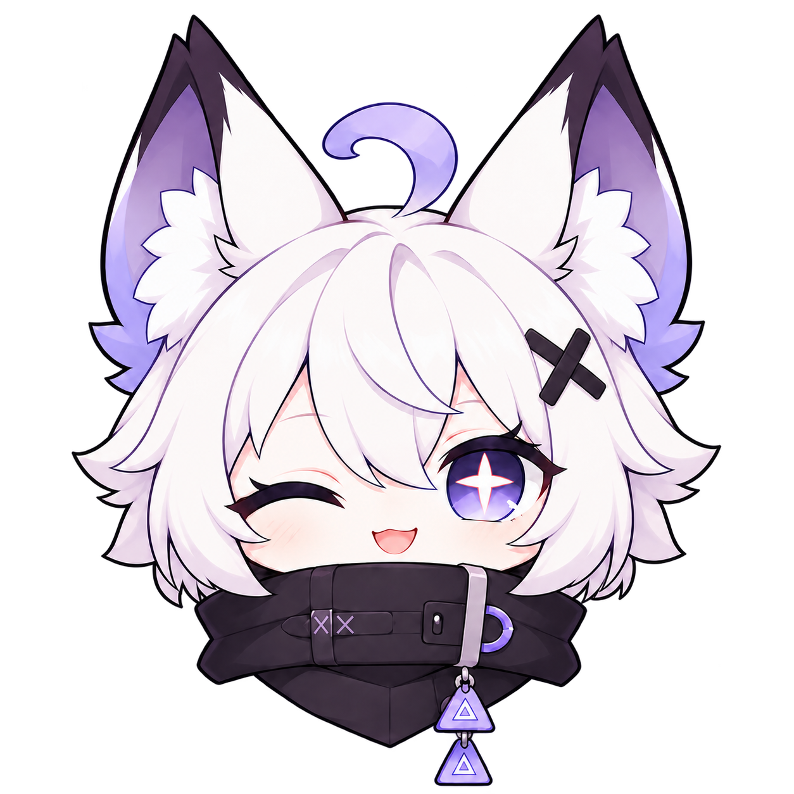
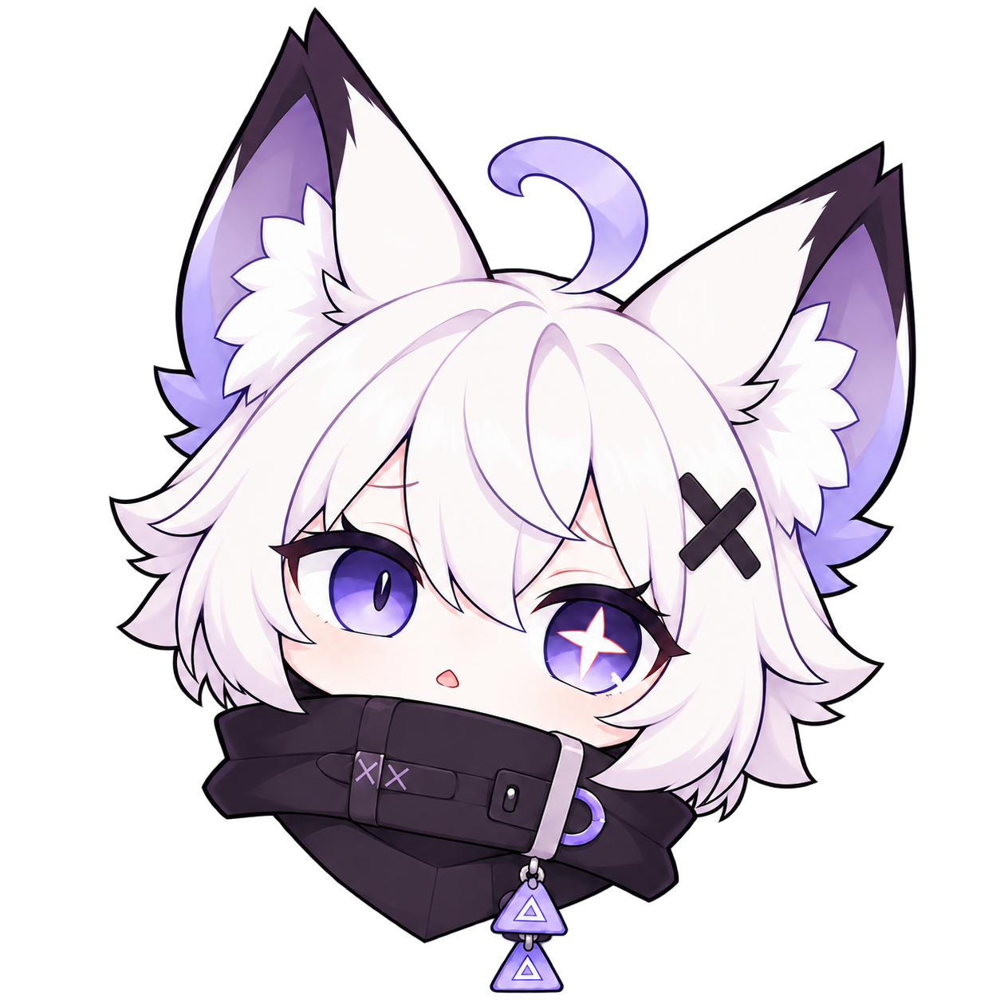

<!doctype html>
<html lang="ja"><meta charset="utf-8"><meta name="viewport" content="width=device-width,initial-scale=1"><title>Kyalulu v1.2 — UIイラスト</title>
<style>
*{box-sizing:border-box}body{margin:0;background:#f6f6fa;color:#262131;font:15px/1.6 system-ui,sans-serif;padding:28px}
header{max-width:1200px;margin:0 auto 24px;display:flex;justify-content:space-between;align-items:center;gap:20px;flex-wrap:wrap}
h1{font-size:25px;margin:0}header p{margin:5px 0;color:#625974}.legend{font-size:12px;color:#625974}
main{max-width:1200px;margin:auto;display:grid;grid-template-columns:repeat(3,minmax(0,1fr));gap:20px}
article{background:white;border:1px solid #e6dff3;border-radius:18px;overflow:hidden}h2{font-size:16px;margin:14px 18px}
.pair{display:grid;grid-template-columns:1fr 1fr}.sample{min-width:0;display:grid;place-items:center;padding:14px}.sample img{width:100%;height:180px;object-fit:contain}
.light{background:#f6f2fd}.dark{background:#1e1b24}.sizes{min-height:114px;display:flex;gap:5px;padding:10px;align-items:center;flex-wrap:wrap}.sizes img{object-fit:contain;flex:none}
a{color:#6241c8;font-size:12px;overflow-wrap:anywhere}a:focus-visible{outline:3px solid #bfa7ff}footer{max-width:1200px;margin:20px auto;color:#625974;font-size:12px}
@media(max-width:1050px){main{grid-template-columns:repeat(2,minmax(0,1fr))}}@media(max-width:600px){body{padding:16px}main{grid-template-columns:1fr}}
</style><header><div><h1>Kyalulu v1.2</h1><p>UI用ポーズ・表情コレクション</p></div><div class="legend">上段：明るい背景 / 暗い背景<br>下段：32 / 64 / 96px</div></header>
<main><article><h2>おすわり</h2><div class="pair"><div class="sample light"></div><div class="sample dark"></div></div><div class="sizes"><a href="../apps/web/public/mascot/v1.2/sit.png" download>sit.png</a></div></article>
<article><h2>案内</h2><div class="pair"><div class="sample light"></div><div class="sample dark"></div></div><div class="sizes"><a href="../apps/web/public/mascot/v1.2/guide.png" download>guide.png</a></div></article>
<article><h2>おやすみ</h2><div class="pair"><div class="sample light"></div><div class="sample dark"></div></div><div class="sizes"><a href="../apps/web/public/mascot/v1.2/nap.png" download>nap.png</a></div></article>
<article><h2>通常</h2><div class="pair"><div class="sample light"></div><div class="sample dark"></div></div><div class="sizes"><a href="../apps/web/public/mascot/v1.2/face-default.png" download>face-default.png</a></div></article>
<article><h2>ウインク</h2><div class="pair"><div class="sample light"></div><div class="sample dark"></div></div><div class="sizes"><a href="../apps/web/public/mascot/v1.2/face-wink.png" download>face-wink.png</a></div></article>
<article><h2>首かしげ</h2><div class="pair"><div class="sample light"></div><div class="sample dark"></div></div><div class="sizes"><a href="../apps/web/public/mascot/v1.2/face-curious.png" download>face-curious.png</a></div></article></main><footer>背景透過PNG・全6種類。ファイル名から個別に保存できます。</footer></html>
